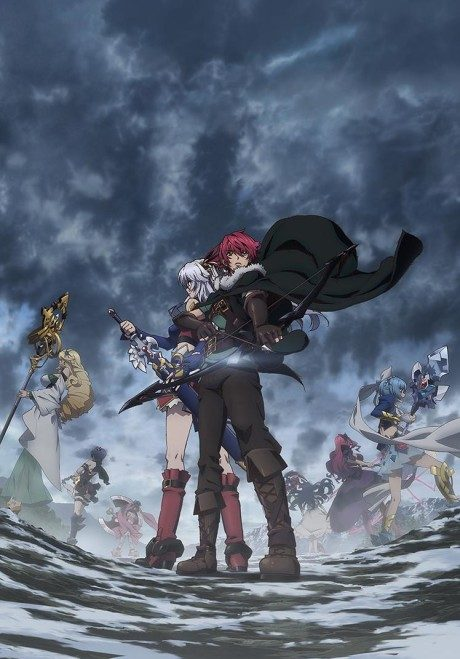

Lord Marksman and Vanadis
魔弾の王と戦姫 (ヴァナディース)
After the anime, read the light novel from Volume 6.
6.7AniList score
—Animeter, no votes yet
13episodes
Anime finished. Where does the story go next?
Start at Volume6
Wikipedia states the anime adapts the first five volumes of the light novel, so start at volume 6. The light novel is finished at 18 volumes.
1518 end
Season 1Start reading here